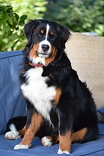

Origin The Bernese Mountain Dog orginated from the farmlands of Switzerkand. This doge one of four types of Swiss Mountain Dogs. Comes from the canton of Bern, hence his name.

Facts
They are really toleratent to cold weather. Friendly to stangers. Easy to train and have a lot of energy. With a average life span of 6 to 8 years and can weight up to 70-115 pounds